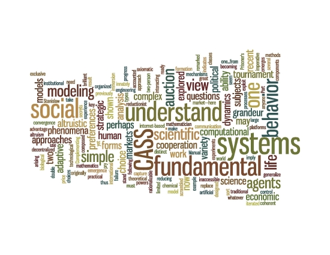
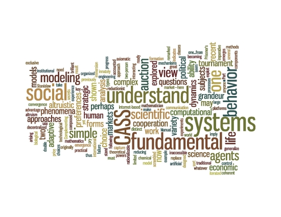

miller@santafe.edu
Institutional Affiliations:
Carnegie Mellon
SDS
Santa Fe Institute

![[MuleyPt, Utah]](photos/MuleyPt0.jpg) Muley Point, Utah, 2003.
Muley Point, Utah, 2003.
|
John H. Miller miller@santafe.edu |
Home | |
|
|
Home | Research | Teaching | Bio/Vita | Misc | Contact | |
|
Institutional Affiliations: Carnegie Mellon SDS Santa Fe Institute |
|

Muley Point, Utah, 2003.
|